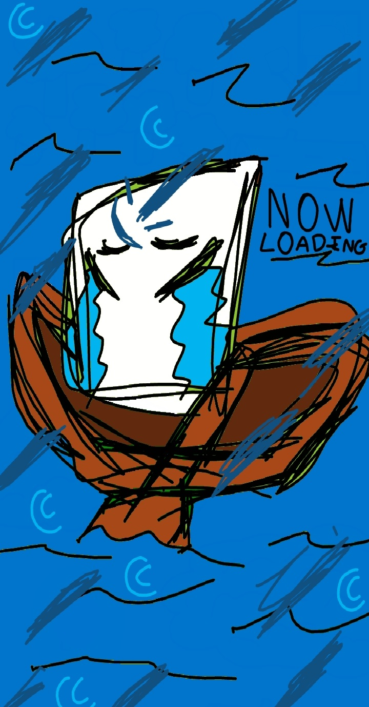

Squary's Land

Squary's Land é um jogo de RPG feito em algum momento de 2021. Ele foi abandonado e está em eterno estado de Demo. O jogo narra a história de um quadrado consciente que se perdeu numa ilha após um acidente de barco em alto mar. Seu objetivo é achar todos os pedaços do seu barco que se espalharam pela ilha para conseguir ir embora.
Fabo © 2026